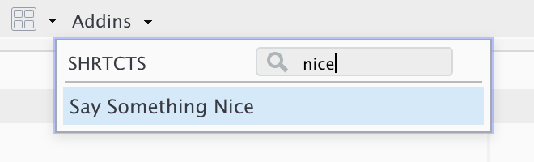

shrtcts lets you make anything an RStudio shortcut!
Installation
You can install shrtcts from GitHub with:
# install.packages("remotes")
remotes::install_github("gadenbuie/shrtcts")Quick Intro
Store your shortcuts in ~/.config/.shrtcts.R or ~/.shrtcts.R. Each shortcut should look something like the example below, but you can include any R code you want as the shortcut, as long as it’s a function.
#' Say Something Nice
#'
#' A demo of cool things.
#'
#' @interactive
#' @shortcut Ctrl+Alt+P
praise::praiseThen add the following lines to your ~/.Rprofile , which you can find quickly with usethis::edit_r_profile(). (Or you can skip this step and run add_rstudio_shortcuts() whenever you update your shortcuts.)
# ~/.Rprofile
if (interactive() && requireNamespace("shrtcts", quietly = TRUE)) {
shrtcts::add_rstudio_shortcuts()
}You can also tell shrtcts to automatically update the keyboard shortcuts assignments.
# ~/.Rprofile
if (interactive() && requireNamespace("shrtcts", quietly = TRUE)) {
shrtcts::add_rstudio_shortcuts(set_keyboard_shortcuts = TRUE)
}After restarting your R session, you’ll find your new shortcut Say Something Nice in your RStudio Addins menu!

If you enabled keyboard shortcut management, you’ll also be able to run your new shortcut by pressing Ctrl + Alt + P. But note that whenever your keyboard shortcuts update, you’ll need to completely restart RStudio — hint: try usethis:::restart_rstudio() — for RStudio to pick up the new keybindings.
If you store your .shrtcts.R file in your home directory, you could also just run shrtcts::add_rstudio_shortcuts() whenever you update the shrtcts file instead of adding the above code to your ~/.Rprofile.